写给那个属于AI绘画的田园牧歌年代
（本来这是要给数字生命卡兹克的文章《今天，好像见证了属于SD时代的消亡》的留言，结果发现想写的有点多，单独成文吧）
周末参加活动的时候，有两个标签硬是被我贴在了自己的身上：小红书和AI。
前者之前说过了，我硬是把自己塑造成了小红书博主。
但后者其实想说能说的更多，这些年大部分精力确实投入在了“玩AI”。
对于一般人而言，这波AI的起点可能是ChatGPT或是DeepSeek。但对于我来说，起点来的要稍早一些，是一款Disco Diffusion的AI绘图软件。
当时还在画画，还在混画画群。
我在一个清晨用Google Colab配好了Disco Diffusion，跑出了人生第一张AI生成的图片，然后极其兴奋把图转到画画群里，那是一张海边的灯塔。
今天回想都有点后怕，因为绘画圈和AI工具现在是完全敌对的状态…（你可能看过这个图，no AI）
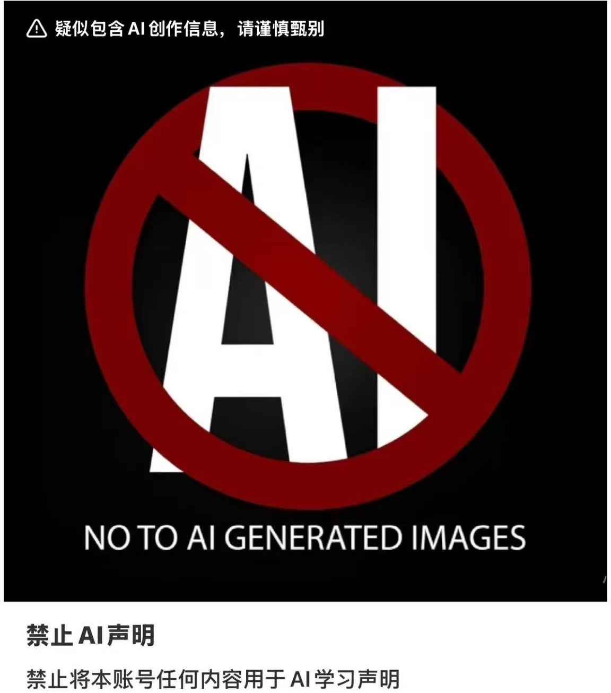
但在那个时点大家都不知道未来会发生什么，而我作为画画为爱好，但本职程序员，就这么跨进还在混沌的AI圈。
接下来就是到了Stable diffusion webui的年代。
和2000年初美好早期的互联网一样，我愿称那时为“AI绘画的田园牧歌”。
因为sd1.5对配置的低要求，整个圈子完全是自由，狂热，那是属于开源的狂欢。
各种风格的模型层出不穷，每天的乐趣就是逛C站，下模型。
我从那时也开始在小红书发发经验笔记，虽然赶不上卡兹克提到的那些大佬大V们，但也算是给我累计了初始的一部分粉丝。
同时因为我自己本职工作是程序员，而sd-webui当时就已经有相当繁荣的插件生态，我开始给它写插件，以开源贡献者的身份去混迹于这个社区。
其中自己的sd 3d model loader的项目对我影响至今，甚至可以说某种程度改变了我的职业规划。
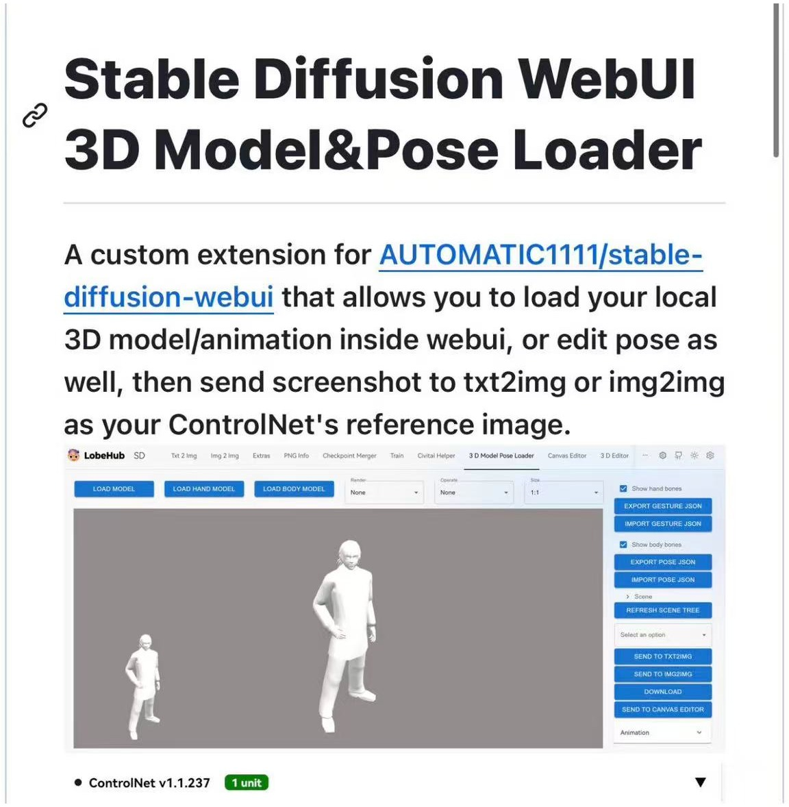
sd-webui玩了一段时间，插件也做了几个。
虽然说sd-webui算是新手友好的程序，但对我来说，它底层用的叫Gradio这个一言难尽的东西，程序写起来异常的难受。
同时整个社区也好像在不约而同的等着一个新的UI界面的到来。
ComfyUI如约而至。
第一次跑ComfyUI，直观感觉就是快，比sd-webui快好多。并且那时就已经有让新手又爱又恨的自定义节点生态，而我继续发挥自己程序员的特长，开始写ComfyUI的插件。
我自己除了AI，3D也是一大爱好，自己建模，搞3D打印。
所以从有AI生成3D模型开始就一直追这块的发展，为那些开源的AI生3D的技术写ComfyUI的插件。
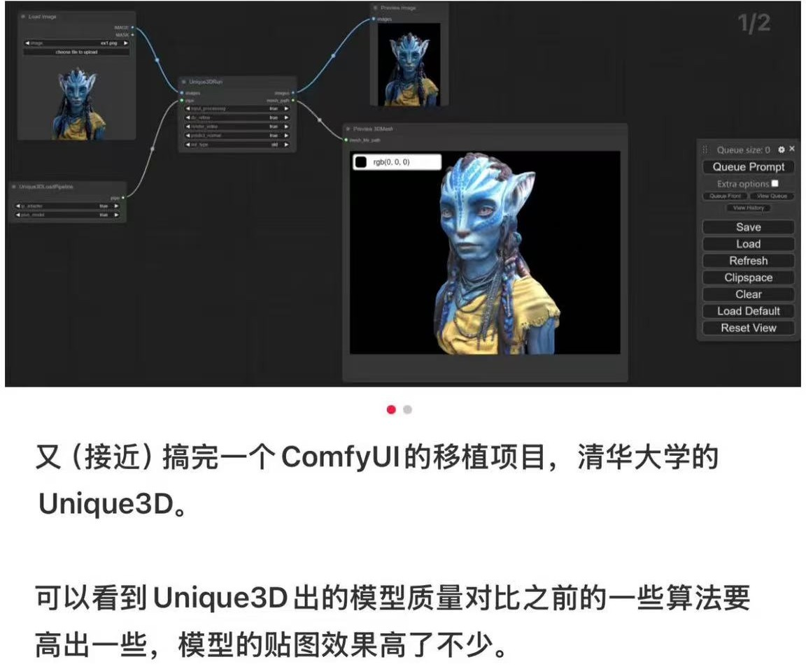
因为这些开源的插件，被朋友拉到WayToAGI的主群，里面全是那些在网上如雷贯耳的名字，这让我有了真的完全混进了这个圈子的感觉。
与此同时，外面的世界也更强烈的感受到了AI带来的狂风骤雨。一个不可不说的就是绘画圈和AI工具的完全对立，其中以敏神开源的PaintsUndo作为一个标志事件，之前写过《“你们和画画的有仇吗”—PaintsUndo》，感兴趣的朋友可以找来看看。
当时还想以这个氛围写一篇短篇小说，名字就叫《终于，你也放下了画笔》，写了一半烂尾了…
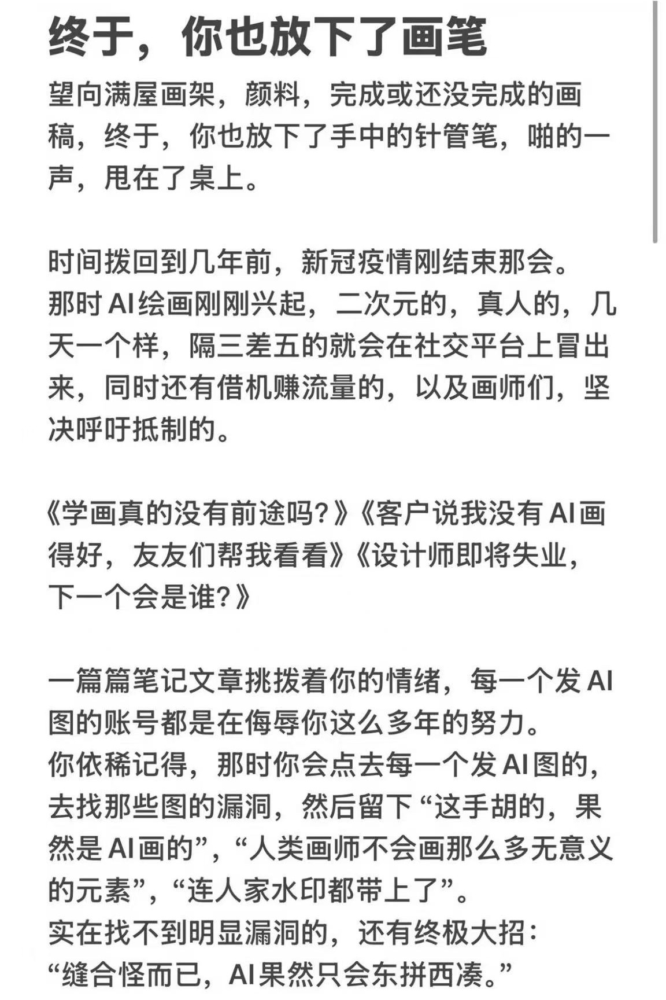
回到ComfyUI上。
好像一切都是宿命的安排。去年的某天在推上看到这么一篇推文：
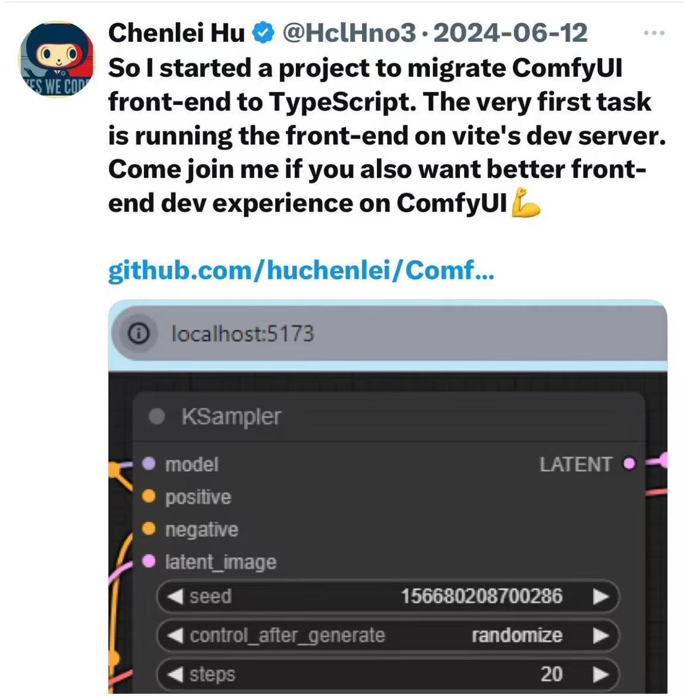
当天脑子一热，截图转发到微信群里，问有没有人认识这位大佬，想认识一下，结果真的被瓜哥发来的微信。他就是HCL，ComfyUI前端库的创始人和奠基人。
刚加HCL的时候其实也没什么想法，没怎么聊天。
直到那时在给腾讯的混元3D 1代做ComfyUI插件的时候，苦于ComfyUI没有原生的3D显示节点，必须要再让用户装一遍3D pack，这个ComfyUI生态中最难安装的插件，才能看到效果，这时就萌发了给ComfyUI做个原生的3D显示节点的想法。
当天就去问HCL这个想法是否可行，在得到肯定答复后，立即开干。
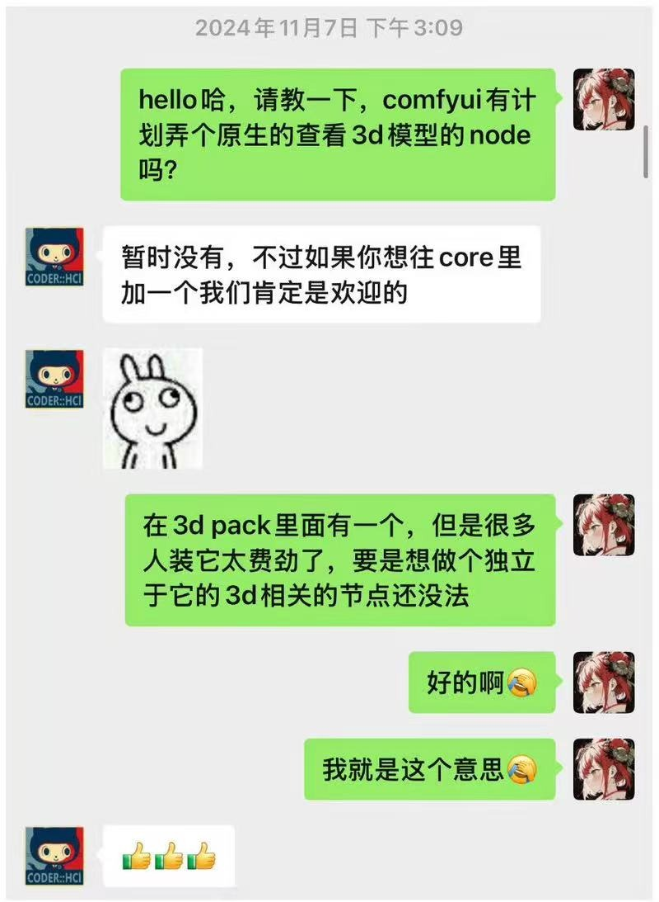
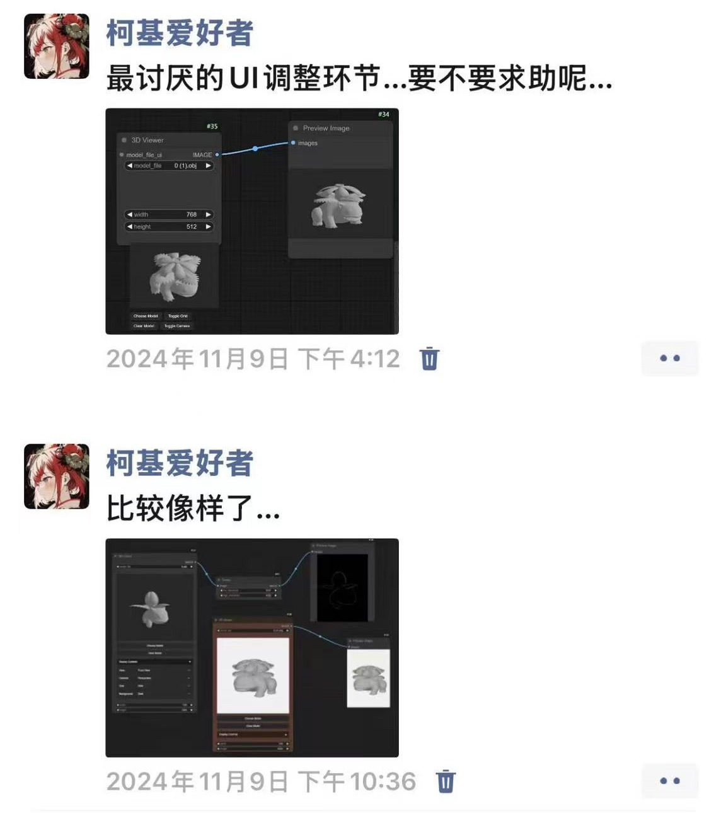
给ComfyUI做3D节点这件事对我个人的重要程度怎么形容都不为过。
一方面这是因为这个小小的节点，竟然让我有了一点点的“名气”，做的东西会被千万人看到，用到，甚至会被邀请参加社区活动，当嘉宾演讲。
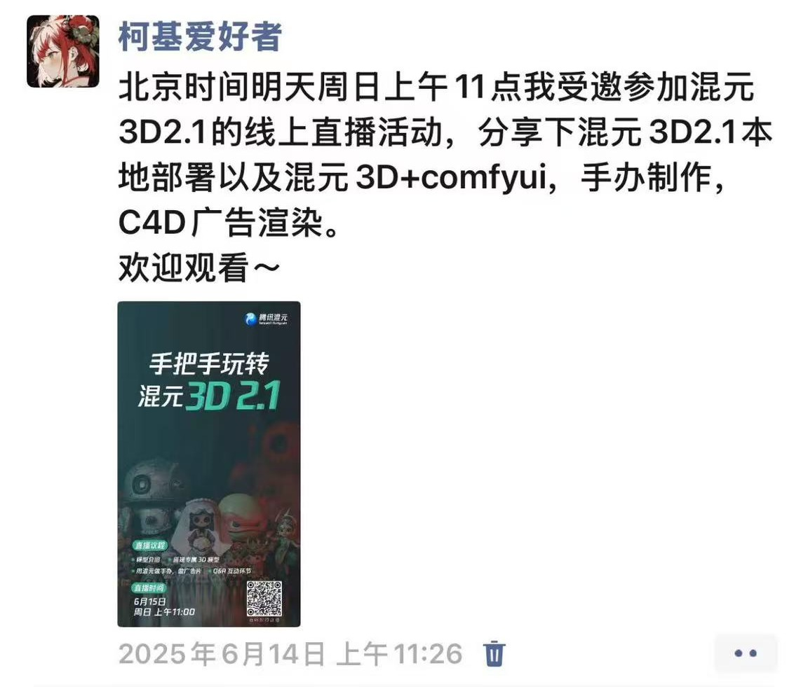
另一方面，因为它，我被ComfyUI官方收编成了ComfyUI官方开发者，还会做一些3D节点外的东西，这让我有机会从内部，同时还可以保持独立开发者的身份去审视这一波改变众多人命运的AI浪潮。
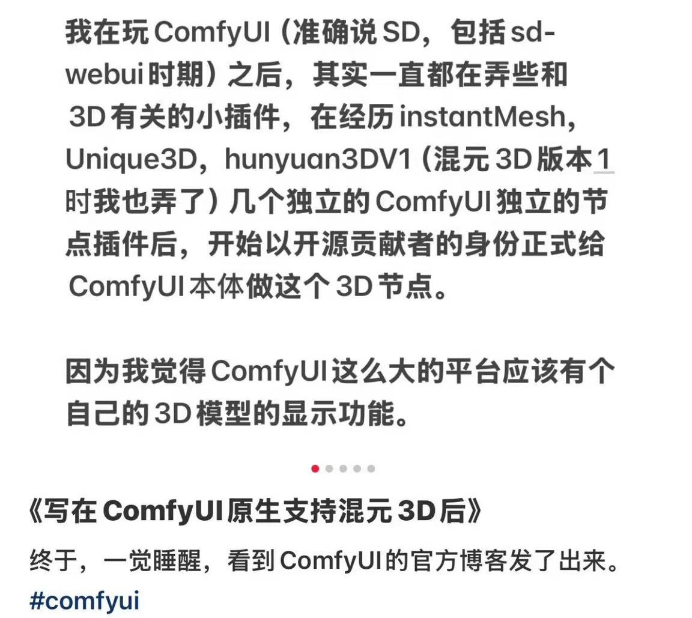
在这一过程中，见证了ComfyUI这一年来完整的生态变化，看着它由“AI绘画平台”进化成“AI平台”的全过程：各类视频/音频/3D模型生成的支持，API节点，A轮融资，未来云端版本的支持，以及是如何被骂…
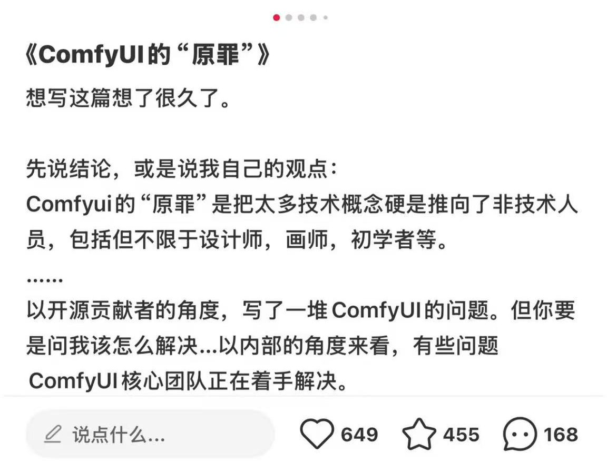
事实上，就像卡兹克在文章里的一个形容“明明只有两年，却给了人好像过了十年的感觉”，整个的AI开源社区已经和当初sd1.5时期不太一样了。
越来越多强大如Flux dev，nano banana的多模态模型让用户争论ComfyUI会不会淘汰，很多公司在通过开源累计了初始用户，攒够名气后，慢慢走向封闭。
甚至连ComfyUI自身也在不断探索商业化的途径。
当然，这些变化无所谓对错，他们只是变化而已。
在这个被观察者形容为“AI泡沫是当年互联网泡沫的二十倍”的时代，就好像影视飓风的Tim在接受老罗的访问时认为，AI在他所在领域带来全面冲击只有两年不到的窗口期一样，除了像我这种AI玩家外，每个人也都将感受它带来的变化，无论是好的，还是坏的，无论你愿不愿意接受它，它已经来了。
只是，我会怀念那个“AI绘画的田园牧歌”时期。
PS，周五活动的时候遇到一个20出头的小哥，想学AI，在B站看到过ComfyUI，说想学一下。
然后昨天晚上帮他远程配了下环境，他给我发来的感谢。
这也是为什么我，或是说我们要贡献开源社区的情感需求。
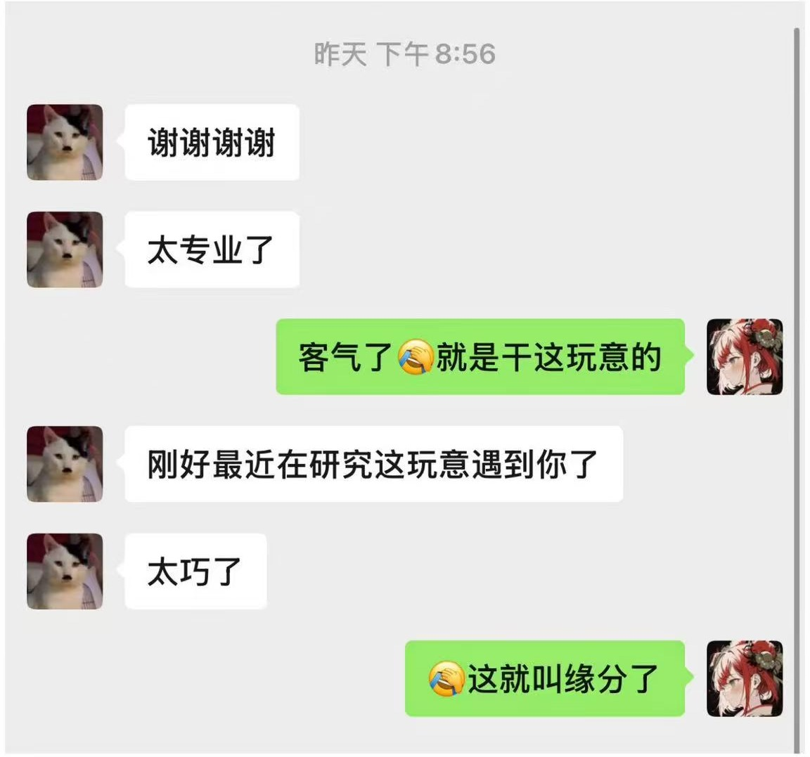
开源必胜，Open source will win。